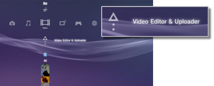
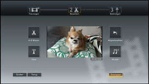

Video > Video-inhoud bewerken
Video-inhoud bewerken
U kunt video-inhoud die opgeslagen is in de systeemopslag van het PS3™-systeem bewerken.
1. |
Selecteer |
|---|---|
|
 |
|
2. |
Selecteer |
3. |
Selecteer |
4. |
Bewerk de video. |
|
 |
|
5. |
Selecteer [Beëindigen]. |
 (Video) >
(Video) >  (Maak een nieuwe video).
(Maak een nieuwe video). (Bewerken) kunt u specifieke scènes verwijderen of tekst (of tekens) toevoegen. Volg de instructies op het scherm om de transactie af te ronden. U kunt een voorbeeld van de bewerkte video bekijken door
(Bewerken) kunt u specifieke scènes verwijderen of tekst (of tekens) toevoegen. Volg de instructies op het scherm om de transactie af te ronden. U kunt een voorbeeld van de bewerkte video bekijken door  te selecteren.
te selecteren.Opmerkingen
- Door
 (Toevoegen) te selecteren in stap 3 kunt u doorgaan met het toevoegen van contentitems en deze combineren tot één videobestand.
(Toevoegen) te selecteren in stap 3 kunt u doorgaan met het toevoegen van contentitems en deze combineren tot één videobestand. - De maximale afspeeltijd voor bewerkte videocontent is één uur.
- U kunt tot 16 tekstitems toevoegen aan één scherm en tot 200 tekstitems in één bewerkt videobestand.
- U kunt alleen de voorgeprogrammeerde nummers gebruiken als achtergrondmuziek voor uw video. Nummers die opgeslagen zijn in de systeemopslag van het PS3™-systeem of op andere opslagmedia kunnen niet gebruikt worden.
Bestandstypes die kunnen worden bewerkt
De volgende bestandstypes kunnen worden bewerkt onder  (Video Editor & Uploader).
(Video Editor & Uploader).
- Video-inhoud die opgeslagen werd in de systeemopslag vanaf opslagmedia of een USB-apparaat voor massaopslag (systeemsoftware versie 3.40 of recenter).
- Video-inhoud die gedownload werd naar de systeemopslag vanaf een
 (Internetbrowser) (systeemsoftware versie 3.40 of recenter).
(Internetbrowser) (systeemsoftware versie 3.40 of recenter).
Opmerkingen
- Video's die opgeslagen werden in de systeemopslag vóór de systeemsoftware geüpdatet werd naar versie 3.40, video's beschermd door auteursrechten en inhoud met beperkingen van ouderlijk toezicht kunnen niet bewerkt worden.
- Zorg dat u geen inbreuk pleegt op de intellectuele eigendom van anderen.